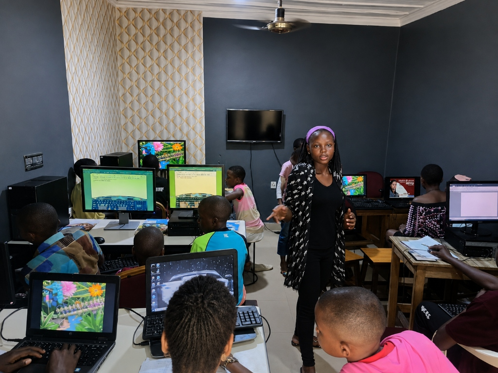

Digital products & engineering
Websites, software, AI-powered tools, automation and digital experiences designed around real needs.
Heartcode Technologies builds digital solutions, develops practical technology skills and connects people to create what matters.

We bring technology, talent and creative thinking together to solve real problems.
Websites, software, AI-powered tools, automation and digital experiences designed around real needs.
Practical training, mentorship and hands-on programmes that help people gain skills they can use.
Projects, events and partnerships that bring learners, professionals and organisations together.
From a first line of code to a business-critical digital product, we help people move from possibility to practical results.
We believe in useful work, clear thinking, shared knowledge and creating opportunities through technology.
Listen first. Learn the context. Focus on the problem worth solving.
Bring the right people and tools together to design and build.
Test, learn, refine and make every next version more useful.